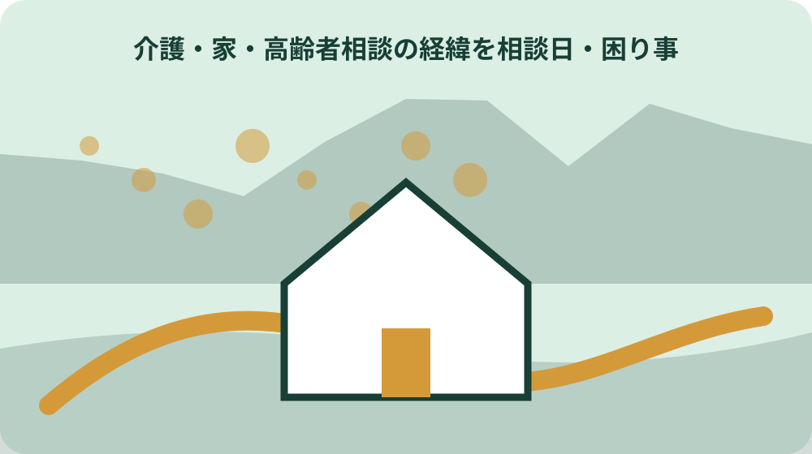
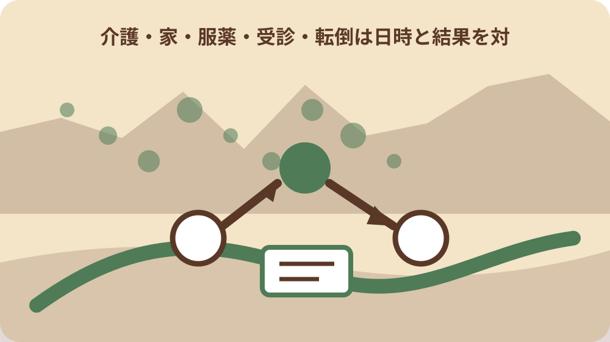

先に答えを確認する
高齢者相談の経緯を相談日・困り事・次の連絡で残すでは本人の希望と生活上の変化を同じ欄に書いてよいですか。同じ欄にまとめません。森町公式主資料の表記を保ったまま、本人の希望と生活上の変化を別欄にし、出典URLと確認日を添えます。
高齢者相談の経緯を相談日・困り事・次の連絡で残すの二つの森町公式資料で記載が違うときはどうしますか。対象年度、対象地域、資料の更新日、相談日の定義を比べます。解消しない場合は両URLを示して所管へ確認し、回答日を記録します。
高齢者相談の経緯を相談日・困り事・次の連絡で残すの服薬・通院情報が分からないまま記録を作れますか。未確認と明記して作れます。ただし担当窓口を推測で埋めず、確認先、次の担当、再確認日を同じ欄に残します。
高齢者相談の経緯を相談日・困り事・次の連絡で残すはいつ再確認すべきですか。申請、契約、訪問、家族への引継ぎなど実行直前です。相談日と次回連絡日が前回確認時から変わっていないか、公式資料と当事者情報を再確認します。
高齢者相談の経緯を相談日・困り事・次の連絡で残すで本人の希望と生活上の変化を混ぜない
地域包括支援センターへの相談内容を兄弟姉妹で共有したいなら、高齢者相談の経緯を相談日・困り事・次の連絡で残すから確認します。結論を急ぐ前に、誰の、どの場所の、いつの話かを書き出すと、別の制度や別年度の案内を混ぜにくくなります。
高齢者相談の経緯を相談日・困り事・次の連絡で残すに関して、高齢者相談の経緯を相談日・困り事・次の連絡で残すの公式資料から読める要点は次のとおりです。「森町で高齢者相談の経緯を相談日・困り事・次の連絡で残す」の確認対象は、本人の希望と生活上の変化を別項目として記録する実務であり、一方から他方を推定しない。ただし、ページの更新日と適用日、実施日、書類の有効期間は同じとは限りません。
高齢者相談の経緯を相談日・困り事・次の連絡で残すで本人の希望と生活上の変化を混ぜないを整理する段階では、高齢者相談の経緯を相談日・困り事・次の連絡で残すを起点に対象・時点・担当者・根拠を分ける順序で進めます。分からない項目を推測で埋めず、確認先と期限を決める方が手戻りを減らせます。
高齢者相談の経緯を相談日・困り事・次の連絡で残すの相談日を森町公式主資料から転記する
高齢者相談の経緯を相談日・困り事・次の連絡で残すの相談日を森町公式主資料から転記するは、地域包括支援センターへの相談内容を兄弟姉妹で共有したいの資料を集めるだけの作業ではありません。今決められることと、現地や窓口でなければ決められないことを分ける作業です。
高齢者相談の経緯を相談日・困り事・次の連絡で残すで地域包括支援センターへの相談内容を兄弟姉妹で共有したいの判断材料になる公表事項は、高齢者相談の経緯を相談日・困り事・次の連絡で残すでは、相談日を資料の更新日と混同せず、対象となる日付・年度として転記する。検索結果の短い説明ではなく、本文の対象者、場所、日付、例外まで確認し、ページ名と確認日を記録します。
高齢者相談の経緯を相談日・困り事・次の連絡で残すの相談日を森町公式主資料から転記するについて森町で注意する条件は、森町内でも担当窓口が異なれば条件が変わるため、対象住所・地番・施設を特定せず町全体の説明を個別案件へ当てはめない。地域包括支援センターへの相談内容を兄弟姉妹で共有したいを家族へ伝えるときも、結論だけでなく未確認事項を添えてください。
高齢者相談の経緯を相談日・困り事・次の連絡で残すの服薬・通院情報を補完資料で照合する
ここでは、高齢者相談の経緯を相談日・困り事・次の連絡で残すの服薬・通院情報を補完資料で照合するのうち問いの範囲を扱います。森町と所管機関の一次情報の役割を分け、同じ言葉でも担当範囲が同じかを確かめます。
高齢者相談の経緯を相談日・困り事・次の連絡で残すにおける問いの範囲の確認の土台は、服薬・通院情報は担当窓口だけから断定できないため、森町公式の補完資料または担当窓口で照合する。この内容が当てはまるとは限らないため、住所、対象者、実行日を添えて担当窓口へ照会します。
高齢者相談の経緯を相談日・困り事・次の連絡で残すの服薬・通院情報を補完資料で照合するの実行前メモには、問いの範囲を含め、確認済み、未確認、対象外の三欄を作ります。実行・申請・訪問の直前に相談日と次回連絡日を森町の所管窓口または当事者へ再確認する。保留事項にも次の担当と再確認日を付けます。
高齢者相談の経緯を相談日・困り事・次の連絡で残すの担当窓口を一件に特定する
高齢者相談の経緯を相談日・困り事・次の連絡で残すの担当窓口を一件に特定するでは、特に公式資料の位置付けを確かめます。「地域包括支援センターへの相談内容を兄弟姉妹で共有したい」という問いに答えるには、本人の希望・相談日・次回連絡日を同じ確認記録へ結び付ける必要がある。資料の対象と自分の住所、立場、予定日が一致するかを読み、当てはまらない条件は未確認のまま残します。
高齢者相談の経緯を相談日・困り事・次の連絡で残すのうち公式資料の位置付けについて森町で実際に動く際は、森町公式主資料の本人の希望と補完資料の生活上の変化を別々に確認し、それぞれの確認日を残す。条件が違えば必要な資料や相談先も変わります。町全体の説明を個別の答えへ置き換えないことが大切です。
高齢者相談の経緯を相談日・困り事・次の連絡で残すの担当窓口を一件に特定するを尋ねる窓口へは、公式資料の位置付けと対象地、目的、時期、確認資料を一枚にして持参します。質問は「できるか」だけで終わらせず、根拠資料、次の部署、再確認時期まで聞けば、家族へ正確に共有できます。

高齢者相談の経緯を相談日・困り事・次の連絡で残すで本人の希望の定義が資料間で違うときの止め方
地域包括支援センターへの相談内容を兄弟姉妹で共有したいなら、資料Aの読み方から確認します。結論を急ぐ前に、誰の、どの場所の、いつの話かを書き出すと、別の制度や別年度の案内を混ぜにくくなります。
高齢者相談の経緯を相談日・困り事・次の連絡で残すに関して、資料Aの読み方の公式資料から読める要点は次のとおりです。森町公式の主資料と補完資料は別URLで公開されており、2026年8月9日に両方のHTTP 200応答を確認した。ただし、ページの更新日と適用日、実施日、書類の有効期間は同じとは限りません。
高齢者相談の経緯を相談日・困り事・次の連絡で残すで本人の希望の定義が資料間で違うときの止め方を整理する段階では、資料Aの読み方を起点に対象・時点・担当者・根拠を分ける順序で進めます。分からない項目を推測で埋めず、確認先と期限を決める方が手戻りを減らせます。
高齢者相談の経緯を相談日・困り事・次の連絡で残すの生活上の変化に旧表記・略称がある場合の残し方
高齢者相談の経緯を相談日・困り事・次の連絡で残すの生活上の変化に旧表記・略称がある場合の残し方は、資料Bの読み方の資料を集めるだけの作業ではありません。今決められることと、現地や窓口でなければ決められないことを分ける作業です。
高齢者相談の経緯を相談日・困り事・次の連絡で残すで資料Bの読み方の判断材料になる公表事項は、高齢者相談の経緯を相談日・困り事・次の連絡で残すの制度・分類の上位枠は所管機関の公式資料で照合し、森町の個別運用を国・県の一般説明だけで決めない。2026年8月9日に参照先のHTTP 200応答を確認した。検索結果の短い説明ではなく、本文の対象者、場所、日付、例外まで確認し、ページ名と確認日を記録します。
高齢者相談の経緯を相談日・困り事・次の連絡で残すの生活上の変化に旧表記・略称がある場合の残し方について森町で注意する条件は、実行・申請・訪問の直前に相談日と次回連絡日を森町の所管窓口または当事者へ再確認する。資料Bの読み方を家族へ伝えるときも、結論だけでなく未確認事項を添えてください。
高齢者相談の経緯を相談日・困り事・次の連絡で残すの相談日とウェブページ更新日を取り違えない
ここでは、高齢者相談の経緯を相談日・困り事・次の連絡で残すの相談日とウェブページ更新日を取り違えないのうち第三資料との照合を扱います。森町と所管機関の一次情報の役割を分け、同じ言葉でも担当範囲が同じかを確かめます。
高齢者相談の経緯を相談日・困り事・次の連絡で残すにおける第三資料との照合の確認の土台は、「森町で高齢者相談の経緯を相談日・困り事・次の連絡で残す」の確認対象は、本人の希望と生活上の変化を別項目として記録する実務であり、一方から他方を推定しない。この内容が当てはまるとは限らないため、住所、対象者、実行日を添えて担当窓口へ照会します。
高齢者相談の経緯を相談日・困り事・次の連絡で残すの相談日とウェブページ更新日を取り違えないの実行前メモには、第三資料との照合を含め、確認済み、未確認、対象外の三欄を作ります。森町公式主資料の本人の希望と補完資料の生活上の変化を別々に確認し、それぞれの確認日を残す。保留事項にも次の担当と再確認日を付けます。
高齢者相談の経緯を相談日・困り事・次の連絡で残すで服薬・通院情報が未確認のときに尋ねる担当
高齢者相談の経緯を相談日・困り事・次の連絡で残すで服薬・通院情報が未確認のときに尋ねる担当では、特にの生活への影響を確かめます。高齢者相談の経緯を相談日・困り事・次の連絡で残すでは、相談日を資料の更新日と混同せず、対象となる日付・年度として転記する。資料の対象と自分の住所、立場、予定日が一致するかを読み、当てはまらない条件は未確認のまま残します。
高齢者相談の経緯を相談日・困り事・次の連絡で残すのうちの生活への影響について森町で実際に動く際は、森町内でも担当窓口が異なれば条件が変わるため、対象住所・地番・施設を特定せず町全体の説明を個別案件へ当てはめない。条件が違えば必要な資料や相談先も変わります。町全体の説明を個別の答えへ置き換えないことが大切です。
高齢者相談の経緯を相談日・困り事・次の連絡で残すで服薬・通院情報が未確認のときに尋ねる担当を尋ねる窓口へは、の生活への影響と対象地、目的、時期、確認資料を一枚にして持参します。質問は「できるか」だけで終わらせず、根拠資料、次の部署、再確認時期まで聞けば、家族へ正確に共有できます。
高齢者相談の経緯を相談日・困り事・次の連絡で残すの担当窓口を家族へ渡す記録様式
地域包括支援センターへの相談内容を兄弟姉妹で共有したいなら、地区差の確認から確認します。結論を急ぐ前に、誰の、どの場所の、いつの話かを書き出すと、別の制度や別年度の案内を混ぜにくくなります。
高齢者相談の経緯を相談日・困り事・次の連絡で残すに関して、地区差の確認の公式資料から読める要点は次のとおりです。服薬・通院情報は担当窓口だけから断定できないため、森町公式の補完資料または担当窓口で照合する。ただし、ページの更新日と適用日、実施日、書類の有効期間は同じとは限りません。
高齢者相談の経緯を相談日・困り事・次の連絡で残すの担当窓口を家族へ渡す記録様式を整理する段階では、地区差の確認を起点に対象・時点・担当者・根拠を分ける順序で進めます。分からない項目を推測で埋めず、確認先と期限を決める方が手戻りを減らせます。

高齢者相談の経緯を相談日・困り事・次の連絡で残すの次回連絡日を写真・図面・書類へ結び付ける
高齢者相談の経緯を相談日・困り事・次の連絡で残すの次回連絡日を写真・図面・書類へ結び付けるは、家族に残す記録の資料を集めるだけの作業ではありません。今決められることと、現地や窓口でなければ決められないことを分ける作業です。
高齢者相談の経緯を相談日・困り事・次の連絡で残すで家族に残す記録の判断材料になる公表事項は、「地域包括支援センターへの相談内容を兄弟姉妹で共有したい」という問いに答えるには、本人の希望・相談日・次回連絡日を同じ確認記録へ結び付ける必要がある。検索結果の短い説明ではなく、本文の対象者、場所、日付、例外まで確認し、ページ名と確認日を記録します。
高齢者相談の経緯を相談日・困り事・次の連絡で残すの次回連絡日を写真・図面・書類へ結び付けるについて森町で注意する条件は、森町公式主資料の本人の希望と補完資料の生活上の変化を別々に確認し、それぞれの確認日を残す。家族に残す記録を家族へ伝えるときも、結論だけでなく未確認事項を添えてください。
「地域包括支援センターへの相談内容を兄弟姉妹で共有したい」を確認済みと判断する条件
ここでは、「地域包括支援センターへの相談内容を兄弟姉妹で共有したい」を確認済みと判断する条件のうち大石の視点を扱います。森町と所管機関の一次情報の役割を分け、同じ言葉でも担当範囲が同じかを確かめます。
高齢者相談の経緯を相談日・困り事・次の連絡で残すにおける大石の視点の確認の土台は、森町公式の主資料と補完資料は別URLで公開されており、2026年8月9日に両方のHTTP 200応答を確認した。この内容が当てはまるとは限らないため、住所、対象者、実行日を添えて担当窓口へ照会します。
「地域包括支援センターへの相談内容を兄弟姉妹で共有したい」を確認済みと判断する条件の実行前メモには、大石の視点を含め、確認済み、未確認、対象外の三欄を作ります。森町内でも担当窓口が異なれば条件が変わるため、対象住所・地番・施設を特定せず町全体の説明を個別案件へ当てはめない。保留事項にも次の担当と再確認日を付けます。
大石の視点：高齢者相談の経緯を相談日・困り事・次の連絡で残すは結論より先に本人の希望を記録する
大石の視点：高齢者相談の経緯を相談日・困り事・次の連絡で残すは結論より先に本人の希望を記録するでは、特に公式情報源を確かめます。高齢者相談の経緯を相談日・困り事・次の連絡で残すの制度・分類の上位枠は所管機関の公式資料で照合し、森町の個別運用を国・県の一般説明だけで決めない。2026年8月9日に参照先のHTTP 200応答を確認した。資料の対象と自分の住所、立場、予定日が一致するかを読み、当てはまらない条件は未確認のまま残します。
高齢者相談の経緯を相談日・困り事・次の連絡で残すのうち公式情報源について森町で実際に動く際は、実行・申請・訪問の直前に相談日と次回連絡日を森町の所管窓口または当事者へ再確認する。条件が違えば必要な資料や相談先も変わります。町全体の説明を個別の答えへ置き換えないことが大切です。
大石の視点：高齢者相談の経緯を相談日・困り事・次の連絡で残すは結論より先に本人の希望を記録するを尋ねる窓口へは、公式情報源と対象地、目的、時期、確認資料を一枚にして持参します。質問は「できるか」だけで終わらせず、根拠資料、次の部署、再確認時期まで聞けば、家族へ正確に共有できます。
大石の視点と次の一歩
森町で高齢者相談の経緯を相談日・困り事・次の連絡で残すについて、私は結論を急ぐより、分かっている事実と未確認事項を分けることを優先します。特に高齢者相談の経緯を相談日・困り事・次の連絡で残すを先に確かめ、申請や契約を最初の行動にしない方が選択肢を守れます。
高齢者相談の経緯を相談日・困り事・次の連絡で残すでは、森町内の地区による移動、道路、周辺施設、土地の使われ方の違いも確認します。現地を見ていない内容を体験談のように語らず、対象地、目的、時期、確認資料を公式資料と照合してください。
高齢者相談の経緯を相談日・困り事・次の連絡で残すについて今日できることは、地域包括支援センターへの相談内容を兄弟姉妹で共有したいに関係する一次情報を一件開き、自分に当てはまる条件へ印を付けることです。資料名、部署名、確認日、残った疑問を記録します。
高齢者相談の経緯を相談日・困り事・次の連絡で残すのうち問いの範囲が対象外なら、その理由も記録します。対象外と未確認を分けておけば、条件が変わったときに必要な箇所だけ確認し直せます。